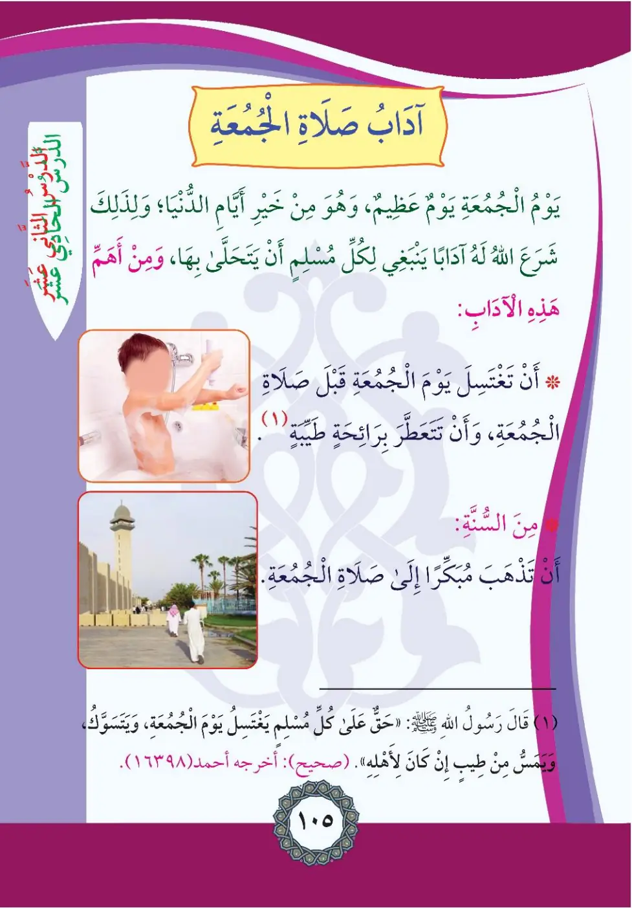
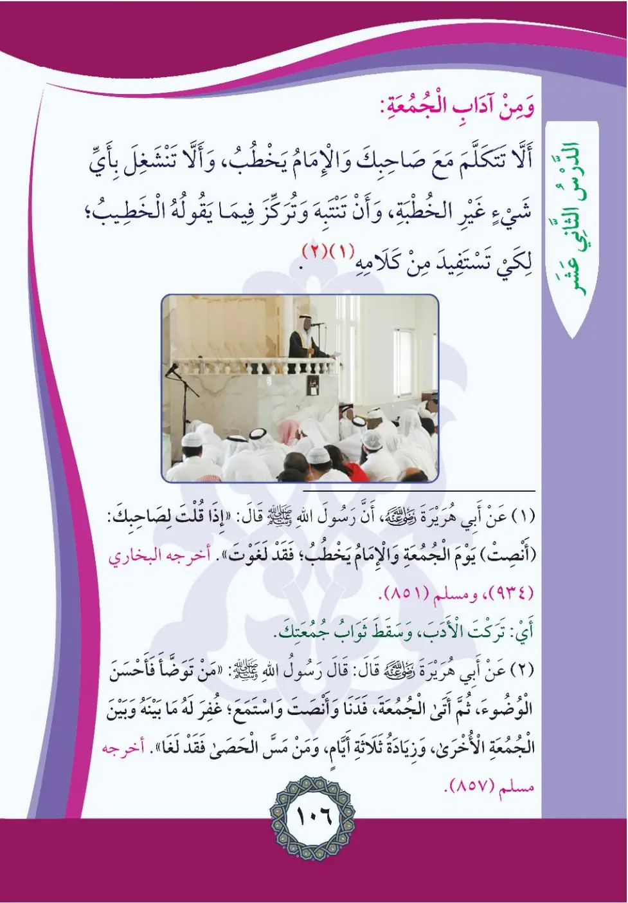

Stage 2·المرحلة الثانية⭐ Unit 1
آدَابُ صَلَاةِ الجُمُعَةِ Etiquette of Friday Prayer
From the Textbookpp. 106–107


يَوْمُ الْجُمُعَةِ يَوْمٌ عَظِيمٌ، وَهُوَ خَيْرُ أَيَّامِ الدُّنْيَا؛ وَلِذَلِكَ شَرَعَ اللَّهُ لَهُ آدَابًا يَنْبَغِي لِكُلِّ مُسْلِمٍ أَنْ يَتَحَلَّى بِهَا، وَمِنْ أَهَمِّ هَذِهِ الْآدَابِ: أَنْ تَغْتَسِلَ يَوْمَ الْجُمُعَةِ قَبْلَ صَلَاةِ الْجُمُعَةِ، وَأَنْ تَتَعَطَّرَ بِرَائِحَةٍ طَيِّبَةٍ. مِنَ السُّنَّةِ: أَنْ تَذْهَبَ مُبَكِّرًا إِلَى صَلَاةِ الْجُمُعَةِ.
Yawmu al-jum'ati yawmun 'azimun wa-huwa khayru ayyami ad-dunya.
Friday is a great day, the best of the days of this world; so Allah legislated manners for it that every Muslim should adopt - the most important being to bathe before the Friday prayer and apply a pleasant fragrance.
From the sunnah: going early to the Friday prayer.
வெள்ளிக்கிழமை மிகச் சிறந்த நாள்; ஜும்ஆ தொழுகைக்கு முன் குளித்து, நறுமணம் பூசி, முன்கூட்டியே பள்ளிவாசலுக்குச் செல்ல வேண்டும்.
(١) قَالَ رَسُولُ اللَّهِ صلى الله عليه وسلم: «حَقٌّ عَلَى كُلِّ مُسْلِمٍ أَنْ يَغْتَسِلَ يَوْمَ الْجُمُعَةِ، وَأَنْ يَسْتَاكَ، وَإِنْ طِيبًا كَانَ لِأَهْلِهِ». أَخْرَجَهُ أَحْمَدُ (١٦٣٩٨) (صَحِيحٌ)
Haqqun 'ala kulli muslimin an yaghtasala yawa al-jum'ati wa-an yastak.
The Messenger of Allah said: "It is a right upon every Muslim to bathe on Friday, use the siwak, and apply perfume if he has any for his family." (Ahmad 16398, authentic)
"ஒவ்வொரு முஸ்லிம் மீதும் வெள்ளிக்கிழமை குளிப்பதும் மிஸ்வாக் பயன்படுத்துவதும் கடமை" (அஹ்மத் 16398)
وَمِنْ آدَابِ الْجُمُعَةِ: أَلَّا تَتَكَلَّمَ مَعَ صَاحِبِكَ وَالْإِمَامُ يَخْطُبُ، وَأَلَّا تَنْشَغِلَ بِشَيْءٍ غَيْرِ الْخُطْبَةِ؛ وَأَنْ تَنْتَبِهَ وَتُرَكِّزَ فِيمَا يَقُولُهُ الْخَطِيبُ لِكَيْ تَسْتَفِيدَ مِنْ كَلَامِهِ.
Wa-min adabi al-jum'a: an la tatakallama ma'a sahibika wa-l-imamu yakhtubu.
Among Friday's manners:
Do not talk with your friend while the imam is delivering the sermon, and do not occupy yourself with anything other than the khutbah; be attentive and focused on what the speaker says so you benefit from his words.
இமாம் உரையாற்றும்போது நண்பருடன் பேசக்கூடாது; உரையில் கவனம் செலுத்தி பயன் பெற வேண்டும்.
(١) عَنْ أَبِي هُرَيْرَةَ رَضِيَ اللَّهُ عَنْهُ قَالَ: قَالَ رَسُولُ اللَّهِ صلى الله عليه وسلم: «إِذَا قُلْتَ لِصَاحِبِكَ أَنْصِتْ يَوْمَ الْجُمُعَةِ وَالْإِمَامُ يَخْطُبُ؛ فَقَدْ لَغَوْتَ». أَخْرَجَهُ الْبُخَارِيُّ (٩٣٤)، وَمُسْلِمٌ (٨٥١)
Idha qulta li-sahibika unsut yawa al-jum'ati wa-l-imamu yakhtubu fa-qad laghwata.
Abu Hurayrah reported that the Messenger of Allah said: "If you say to your companion: Be quiet on Friday while the imam is giving the khutbah - then you have spoken idly." (Bukhari 934, Muslim 851)
"உரையின்போது உன் நண்பனிடம் 'அமைதி' என நீ கூறினால் அதுவே வீண் பேச்சாகும்" (புகாரி 934, முஸ்லிம் 851)
(٢) عَنْ أَبِي هُرَيْرَةَ السُّقَيِّ قَالَ: قَالَ رَسُولُ اللَّهِ صلى الله عليه وسلم: «مَنْ تَوَضَّأَ فَأَحْسَنَ الْوُضُوءَ ثُمَّ جَاءَ الْجُمُعَةَ فَدَنَا وَأَنْصَتَ وَاسْتَمَعَ غُفِرَ لَهُ مَا بَيْنَهُ وَبَيْنَ الْجُمُعَةِ الْأُخْرَى وَزِيَادَةُ ثَلَاثَةِ أَيَّامٍ، وَمَنْ مَسَّ الْحَصَى فَقَدْ لَغَا». أَخْرَجَهُ مُسْلِمٌ (٨٥٧)
Man tawada fa-ahsana al-wudu thumma ja'a al-jum'ata fa-dana wa-ansata wa-stama'a.
Abu Hurayrah said: The Messenger of Allah said: "Whoever performs wudu and does it well, then comes to Friday, draws near, listens attentively and stays silent - his sins between that Friday and the next are forgiven, plus three more days; but whoever touches pebbles has spoken idly." (Muslim 857)
"நன்கு வுழூ செய்து ஜும்ஆவுக்கு முன்வந்து கவனமாக கேட்பவருக்கு இரு ஜும்ஆக்களுக்கு இடைப்பட்ட பாவங்கள் மூன்று நாட்கள் கூடுதலாக மன்னிக்கப்படும்" (முஸ்லிம் 857)